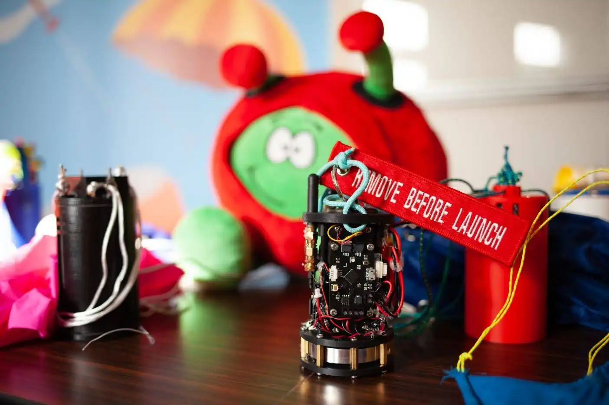
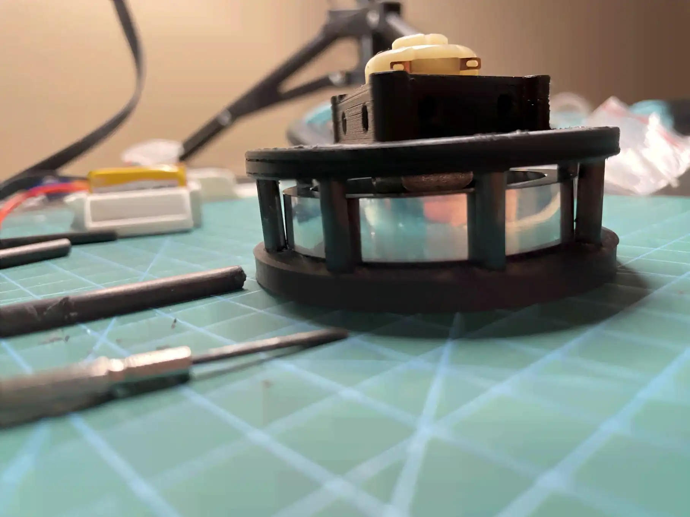
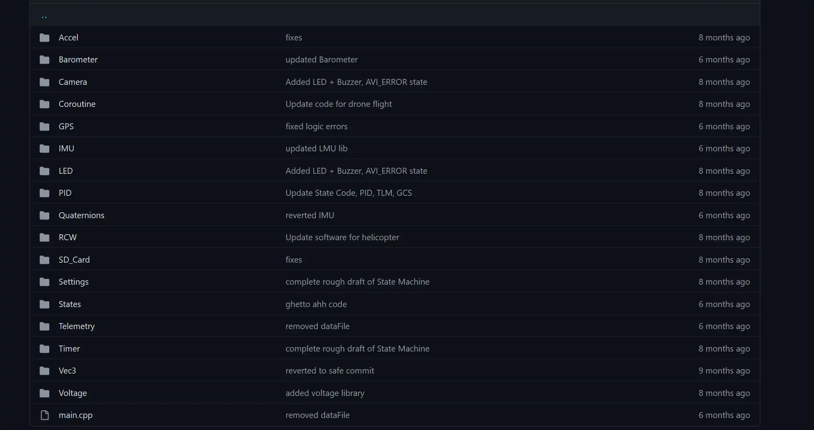
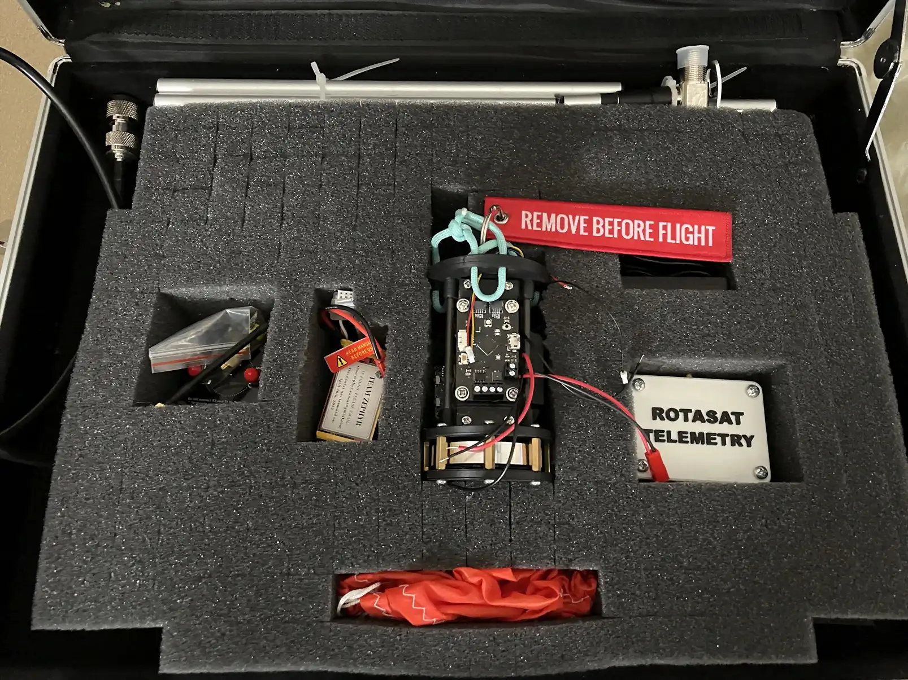
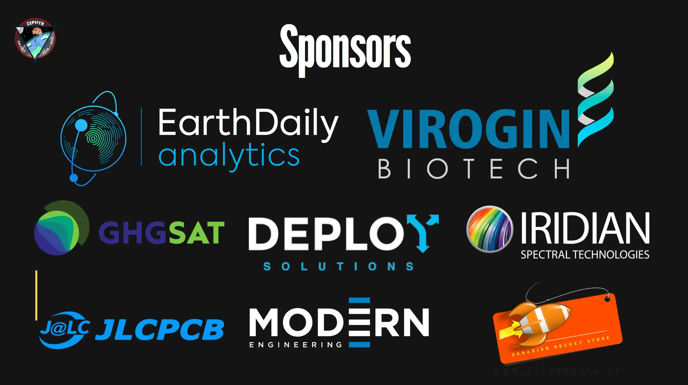
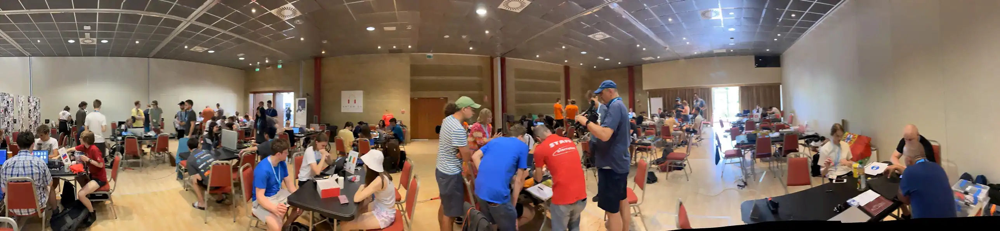

Team Zephyr was a team I founded in the fall of 2021, with the goal of competing in the Canadian Satellite Design Challenge (CSDC). We were to build and fly a pop-can sized, fully functioning satellite to be flown to an altitude of 1 kilometer and dropped, collecting and sending data all the way down. I formed a team of six from students at my school and others, with the scope of our project covering outreach, programming, electronics design, and more. I acted as the team captain and development lead, overseeing team organization and the creation of the hardware, software, and electronics of the satellite.
The goal of the competition was to successfully fly and recover this satellite, while simultaneously obtaining sponsorships, running outreach events, and writing design reports.
In the end, we won the CSDC and represented Canada at the ESA finals in Bologna, Italy, winning Best Report there.
More (a LOT more) details below about the whole project:
Reports
Our award-winning reports are here to download:
Cansat
Hardware


The CanSat itself consisted of three major sections: computer, power, and payload. They were affixed to a 3D printed frame with carbon fibre tubes.


Below, a 9V DC motor powered the first aluminum reaction control wheel flown on a CanSat.
Everything was built to survive a 50G flight on an L2 rocket, from the sleds to the parachute deployment hardware. Each component was verified through finite element analysis and real-world weight tests.
Software


The software for the satellite was a state machine based on the orientation and control systems of my previous rocket, with extended features for GNSS processing and live telemetry through a 915Mhz downlink. The mathematics for the quaternion processing and accelerometer orientation were written by me.
Check out the GitHub repository!
Electronics


Three major versions of the flight computer was constructed, with different parts each time due to the 2021-2022 chip shortage.
Testing

Range tests and control system tests were some of many tests done in advance to verify performance of the satellite in flight.
Ground Station
Software
The ground station was written in Processing and displayed all of the data coming down from the satellite, with display graphs for important data, as well as large buttons for sending commands to the satellite in flight.
Hardware


I even found a nice box to put everything in and package everything safely during transportation and before flight. It’s a miracle we made it through the airport so many times.
Outreach
Schools


I led the outreach group to local elementary schools, showing them how rockets fly in Kerbal Space Program and presenting our satellite and Canada’s various space challenges. It was a wonderful time.


Sponsorships
We had social media accounts on different platforms, and were recognized by the Canadian Space Agency, local news, and more.




I scripted, filmed, and rendered the videos that we made and posted on our platforms.
Overall, our YouTube account received over 2000 views, and our Instagram collaborations with other STEM accounts (such as @girlsinstemorg and JLCPCB) reached over 100,000 people.
Competition Gallery
Canadian Satellite Design Competition


European Cansat Finals


